This project is a video game based upon Freud's concept of the pleasure principle, or the human desire to experience pleasure and avoid unpleasure. In this game, this is symbolized by the "Pleasure Bar" at the top of the screen, which will slowly decrease with time. In order to combat this, the player must collect items (that symbolize larger concepts) that fall from the top of the screen to replenish the Pleasure Bar. However, there is a catch; because of Freud's idea of diminishing returns when it comes to pleasure, the items that fall from the sky will have less of an effect, no effect, or a negative effect if they get the same icon more than once in a row.
The first step of this process was to design the character, the background, and the icons that would fall from the sky. I first needed to find my design inspirations for all of them. Since this is an 8-bit video game, I thought it would be interesting to use one of the older designs of Mario as the inspiration behind the character design. Using Photoshop, I changed him to look a little bit more like Freud based on this photograph, adding a little bit more color so that he would stand out from the background.
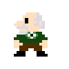 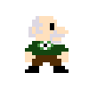Afterward I created the initial character model, I created a few more models of the Freud character running and jumping so that I could simulate movement on the screen:
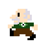 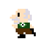 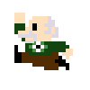 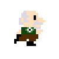 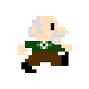 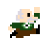Next, I had to design the icons that would represent different distractions and methods of experiencing pleasure and unpleasure. This includes, aggression, anger, alcohol, drugs, love, sex, and the loss of love.
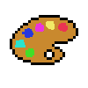 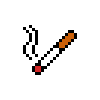 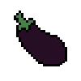 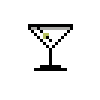Finally, I had to design the background of the game that would end up being the title screen, game over screen, and player screen. I created a simple room with a wooden floor, couch, and chair to represent Freud’s methodology of sitting and talking with his patients in his sessions.
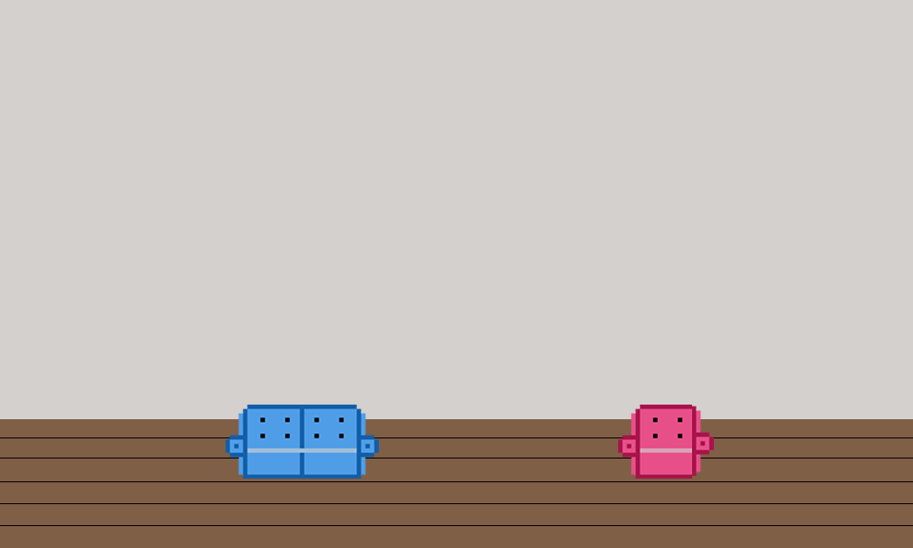Now that everything was designed, it was time to move onto the most difficult part of it all: coding the game.
I built this video game using p5.js, an open-source JavaScript library that I've used to build a few other projects in my undergraduate career. To plan for this video game, I made a list of mechanics that I needed to implement within the code:
I downloaded the designs I had created before into the folder along with some audio tracks, and ended up with this:
To play the game, you only need to press "D" to move right, "A" to move left, and "W" to jump.
Below, you can find a list of the different items you can collect in the game.
| Icon | First Catch | Repeated Catch |
|---|---|---|
Aggression |
+75 | -50 |
Art |
+50 | +25 |
Drugs |
+50 | +1 |
Sex |
+100 | +15 |
Love |
+200 | +30 |
Alcohol |
+50 | +1 |
Loss of Love |
-200 | -200 |
Hope you enjoy playing the game!